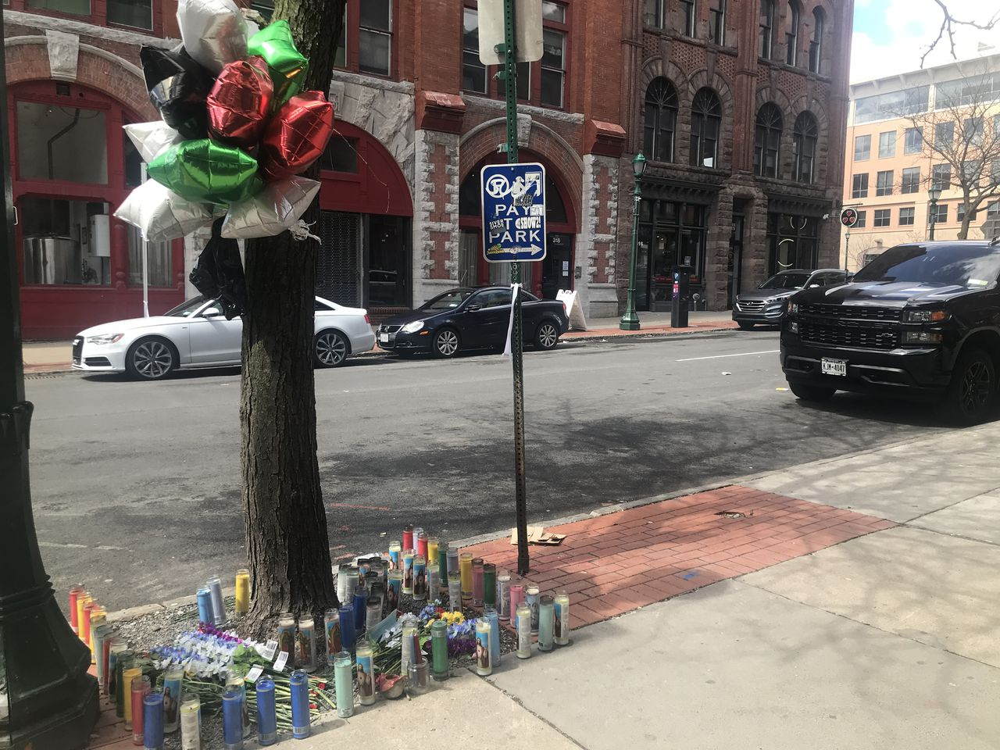
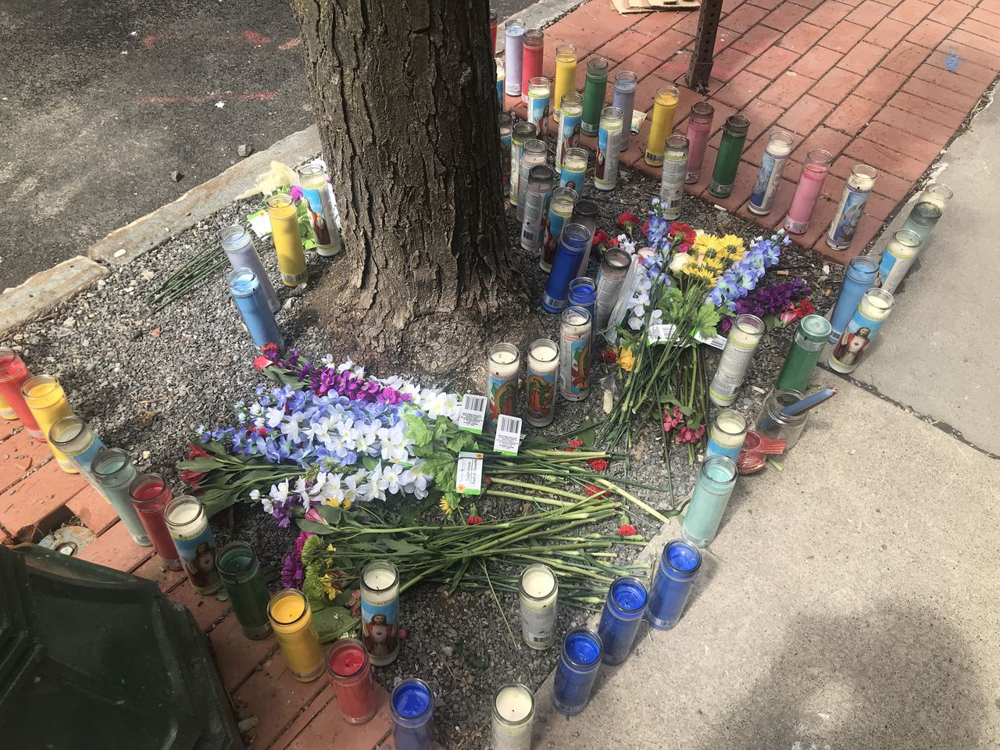

HTML/CSS Assignment #1
Source
Syracuse.com
23-year-old man shot at Armory Square improving, police say
A 23-year-old man shot in Armory Square just after midnight on Friday is no longer in critical condition, police said on Sunday.

Alt Text: Memorial in Armory Square for the man who was shot and killed.
Balloons and candles serve as a memorial to Akok Lual, 24, who was shot and killed in Armory Square on Saturday, April 16, 2022. (Rylee Kirk | Rkirk@syracuse.com)
By Rylee Kirk | rkirk@syracuse.com
Syracuse, N.Y. — A 23-year-old man shot in Armory Square just after midnight on Friday is no longer in critical condition, police said on Sunday.
The 23-year-old was one of five men — all between 20 and 25 years old — who were shot, according to police and a witness. All were taken to Upstate University Hospital. One man, Akok Lual, 24, of Syracuse died at the hospital, Syracuse Police Chief Ken Buckner said during a news conference Saturday afternoon at the Public Safety Building.
The 23-year-old, who has yet to be identified, had been listed in critical condition but was upgraded to stable condition on Sunday, said Sgt. Thomas Blake, a spokesperson for Syracuse Police. The three others had non-life-threatening gunshot wounds, police said. Blake did not provide an update on their conditions.
On Sunday morning, a memorial to Lual had been placed around a tree on South Clinton Street. Green, white, black, and red balloons were closely bunched on a tree. Below the tree are around 40 votive candles of Jesus and the Lady of Guadalupe as well as some plastic flowers.

Candles of Jesus and the Virgin of Guadalupe surround a tree with balloons as a memorial to Akok Lual, who was shot and killed on the 300 block of South Clinton Street Saturday, April 16, 2022. (Rylee Kirk | rkirk@syracuse.com)
he shooting happened between Al’s Wine and Whiskey Lounge and DP Dough. Gun shots filled the 300 block of South Clinton Street early Saturday morning while people enjoyed the warm air, bar scene, and lively music. At least five shots rang out near Al’s Wine and Whiskey Lounge and panic ensued, witnesses told Syracuse.com | The Post-Standard.
Other popular bars and restaurants nearby are Three Lives, Clinton Street Pub and Funk ‘n Waffles.
The shooter was not caught at the scene, police said. Officers were only 30 to 40 feet away when the shooter opened fire, Buckner said.
Mayor Ben Walsh called the shooting “brazen” and “senseless,” at a news conference Saturday at the Public Safety Building.
“(The officers) couldn’t have been closer to the incident,” the mayor said. “For these individuals to willingly get into a conflict in the middle of crowd with police officers feet away and decide it’s a good idea to pull out a gun and to start shooting with no regard for the safety of anyone around them - it’s crazy. You try to make sense of it, and you can’t.”
No information on a suspect has been released by the police.
Police ask that anyone with information about the shootings contact them at (315) 442-5222.